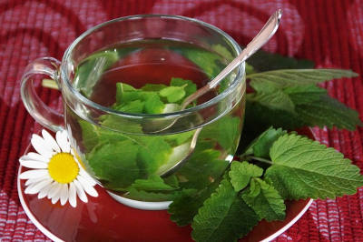

A erva-cidreira é talvez uma das plantas mais conhecidas para a produção de chás no Brasil. Pertencente à família do boldo e da hortelã, a espécie tem propriedades calmantes, analgésicas, antioxidantes e anti-inflamatórias, além de um sabor maravilhoso.
Ela também é uma aliada importante no controle de distúrbios psicológicos como a ansiedade, depressão, insônia e estresse. Além dos chás, a erva, originária de regiões da Ásia e Europa, também pode ser utilizada no preparo de sucos, óleos essenciais e receitas culinárias.
O preparo é simples e pode ser feito utilizando sachês industrializados, presentes em supermercados ou lojas de produtos naturais, embora seja possível optar pelo cultivo em casa, além da compra das folhas em feiras orgânicas do seu bairro ou município.

Comece agora a desfrutar destes benefícios aprendendo a fazer corretamente este chá.